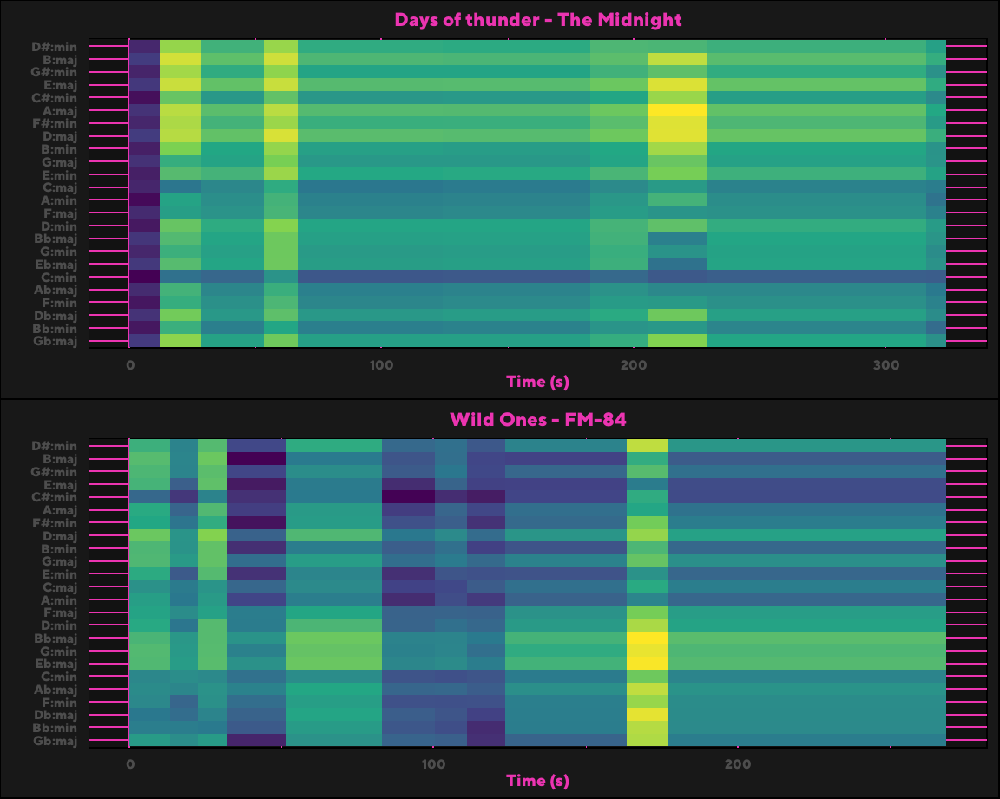
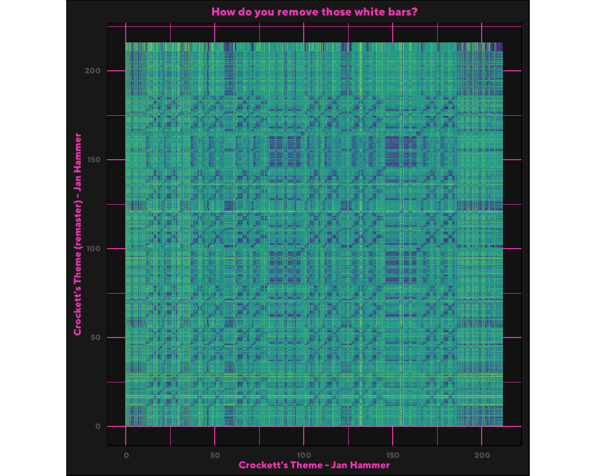
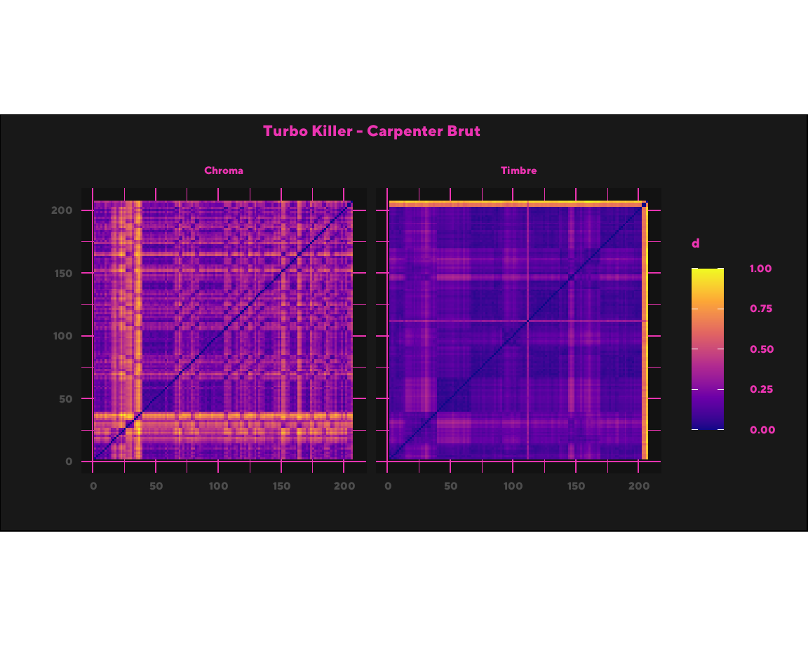

Chord comparison
I have chosen Days of Thunder & Wild Ones from to corpus to do chordogram analysis with. Both songs contain vocals and have more ‘normal’ structure compared to most other synthwave tracks in the corpus. Days of thunder seems to have less chord variation, while also being longer. Wild Ones has a lot of chord changes in the beginning, but the final stretch also seems to have no significant chord changes. It is surprising that both songs come out so different, because while the tracks do not sound the same, I do think that both artists make similar kinds of synthwave music.
What is your corpus, why did you choose it, and what do you think is interesting about it?
Synthwave (also called outrun, retrowave, or futuresynth) is an electronic music microgenre that is based predominantly on the music associated with action, science-fiction, and horror film soundtracks of the 1980s. Other influences are drawn from the decade’s art and video games. Synthwave musicians often espouse nostalgia for 1980s culture and attempt to capture the era’s atmosphere and celebrate it. (from wikipedia)
I chose this corpus because I am currently listening to a lot of synthwave music. I also listen to all my music on spotify, so I can use my playlists to build my corpus up quickly. I am also currently working on a synthwave rythm-game in unity, so exploring this corpus could also help with this side project.
What is your corpus, why did you choose it, and what do you think is interesting about it?
I intent to divide the corpus based on subgenres within synthwave. These subgenres are similar to the subgenres within heavy metal, but likely a lot more subtle. It would therefore be intresting to see if these subgenres are actually detectable within the corpus. I personally do not think there are very significant diferences between most of these subgenres, but we will see if the data agrees with that statement. As a second point of exploration, I want to distinguish between artists. This will probably fit nicely with subgenre detection, because you could imagine each artist’s style to be similar to how subgenre styles are defined.
How representative are the tracks in your corpus for the groups you want to compare?
I will use a variety of artists and playlists to build the corpus. For subgenre detection I will use playlists with songs for each subgenre. For artist dectection I will include a few albums of synthwave artists that are intresting and feel different, to make the comparison intresting.
Playlist
The basics
When working with a new dataset, it is often a great idea to create some basic plots to get a feeling for the dataset, before diving into the actual research. The following two histograms will hopefully give a crude visualization of some properties of the chosen corpus.
Low popularity
Lets start of by looking at the popularity of the songs in the matrix. Spotify API assigns a popularity value to each track from 0 to 100. We can see that most songs have about 50 popularity. With some outliers close to minimum and maximum popularity. The corpus has a surprising amount of popularity while not being a well known genre (or maybe it is?). It would be nice if Spotify would explain how it determines popularity.
Low Speechness
It is clear from this histogram that speechness is very low in the corpus. This makes a lot of sense, because most tracks in the corpus do not contain any vocals. What the plot does show us is that the expected speechness values and the Spotify provided values do indeed match up, which is good.
Vibe checking
Energy and Valence can convey the mood of songs. Here red are minor songs.

Comparing original to remaster
Jan Hammer’s most iconic soundtrack has to be ‘Crockett’s Theme’ from Miami Vice. Miami Vice is quite old now (originally aired in 1984), but Jan Hammer’s work on the soundtrack is great, and went on to inspire a lot of the modern Synthwave artists. Jan Hammer recently (2018) released a remaster of ‘Crockett’s Theme’ in the ‘Special edition’ album. I like this remaster better, but it is very subtly different from the original. Therefore it is probably the perfect candidate for this comparison.
Analysis
The plot shows that the original and the remastered soundtrack are indeed very similar.

Song Choice
I wanted to explore the song ‘Turbo Killer’ by ‘Carpenter Brut’. This song really stands out for quick pacing and constantly building and escalating upon the previous ‘verse’. The song gives a sense of progression or fast movement/speed, and that is probably why this is one of my favorite tracks in this corpus.
The Chroma matrix
When looking at the Chroma matrix we see a lot of tiny changes in the first forty seconds. Every seven-ish seconds there is a change. After 40 seconds the song changes into high tempo guitar only, and the following blocks all add additional elements to this. The matrix turns out very interesting, because you can see how the song constantly builds up to more complexity.
The Timbre matrix
The Timbre matrix looks less interesting. There are no real verses, but you can tell where transitions to more complexity happen. What is very surprising is that the high point of the timbre matrix is at the end of the song.